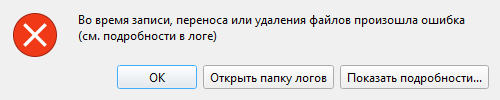

Приложение 4. Вопросы и проблемы |
Сообщения программы разобраны в конце каждого раздела, в таблицах «Что вы видите — что случилось — что делать». Здесь: как найти нужную таблицу и что приложить к обращению за помощью.
|
💡 Совет. Тексты сообщений в руководстве приведены дословно: найдите нужное поиском по документу. |
Виды сообщений |
| Окно | Что значит |
|---|---|
| «Ошибка» | Действие не выполнено. Красный значок с крестом — сбой («Не удалось…», «ошибка», «см. в логе»), жёлтый треугольник — неверно введённые данные |
| «Информация» | Сообщение к сведению, действий не требует |
| «Подтверждение», кнопки «Да» и «Отмена» | Программа спрашивает перед необратимым или необычным действием. «Отмена» ничего не меняет |
Если в сообщении есть «см. лог» или «в логе», подробности записаны в журнал работы; он нужен тому, кто разбирается с проблемой (см. «Что приложить к обращению»). В таком окне есть кнопка «Открыть папку логов» (откроется папка с журналом) и кнопка «Показать подробности…»: по ней раскрывается текст ошибки или последние строки журнала. Его можно выделить, скопировать и приложить к обращению.

Рис. 61. Сообщение об ошибке с кнопками «Открыть папку логов» и «Показать подробности…».
Где искать сообщение |
| Что происходит | Раздел |
|---|---|
| Программа не запускается; окно «Восстановление базы данных»; «База данных создана более новой версией программы»; «Не удалось создать папку с данными программы» | приложение 2 |
| Платежа нет в таблице; таблица пуста; поиск ничего не находит; числа в боковой панели не совпадают с таблицей | 5, 2 |
| Платеж не сохраняется; не удаётся отменить удаление (Ctrl+Z); недоступна команда «Редактировать платеж» или «Копировать платеж с новым основанием» | 3 |
| Не получается оплатить (в том числе «превышает остаток задолженности»); не удаётся изменить или удалить оплату; остаток со знаком «минус» | 4 |
| Не создаётся контрагент, договор или документ; не переименовывается; контрагент или договор пропал из списка (архив); не открывается история платежей; неактивна кнопка «← Подставить срок оплаты» | 6, 7 |
| Расчётная дата неверна | 7 |
| Выписка не читается; сверка показывает лишние расхождения | 8 |
| «Транзакций с комиссиями не обнаружено»; предупреждение о дублях при создании комиссий | 9 |
| Экспорт не создаёт файл; нет экспорта в PDF | 10 |
| План не сохраняется; не строится отчёт исполнения или график | 11 |
| Настройки не сохраняются; поле с красной рамкой; не добавляется должность или дата календаря | 12 |
| «Резервная копия: ОШИБКА СОЗДАНИЯ»; не получается восстановить данные из копии | 13 |
| Кнопка синхронизации красная; «КОНФЛИКТ»; «нет связи»; «обновите программу» | 14 |
| Обновление не скачивается или не устанавливается | 15 |
| Данные пропали или изменились после синхронизации или восстановления | 13, 14 |
|
💡 Совет. Если данные пропали или изменились после синхронизации или восстановления, прежняя версия не потеряна: программа сохраняет её в |
Что приложить к обращению |
Если сообщение не помогло, обратитесь к ответственному за программу, и приложите:
log.log из папки data\logs. Если там есть sys_errors.log, приложите и его. Особенно это важно, когда программа закрылась без сообщения.updater.log из той же папки (раздел 15).data\diag, кнопка «Показать отчёт» открывает её.|
🍎 macOS: папка |